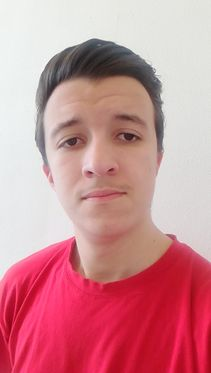

Abdellah Dahmani
Student graduaat programmeren
Info over mij

Ik ben Abdellah Dahmani ik ben 20 jaar oud Ik woon in het centrum van Antwerpen.
En ik studeer aan de Hogeschool Thomas More. Ik volg de
richting
Programmeren.
Mijn hobby's zijn gamen, voetballen, zwemmen en fitnessen.
Als ik niet op school zit dan ben ik thuis aan het gamen of voor school aan het werk.
of eventueel aan
het sporten. Gamen doe ik ook heel graag.
Een beetje geschiedenis
Voor dat ik hier bij Thomas More de richting programmeren kwam volgen
zat ik op ap ook programmeren te volgen. Helaas ging dat wat minder goed.
Op de middelbare school heb ik 7 jaar lang elektriciteit gevolgd.
Na het behalen van mij secundaire onderwijs heb ik besloten om verder te gaan studeren.
Ik heb altijd al van technologie gehouden daarom ben ik altijd bezig geweest met games of
Motivatie
Al sinds mijn jonge jaren heb ik altijd al gehouden van technologie.
Daarom dat ik nu ook echt voor de richting programmeren gekozen heb.